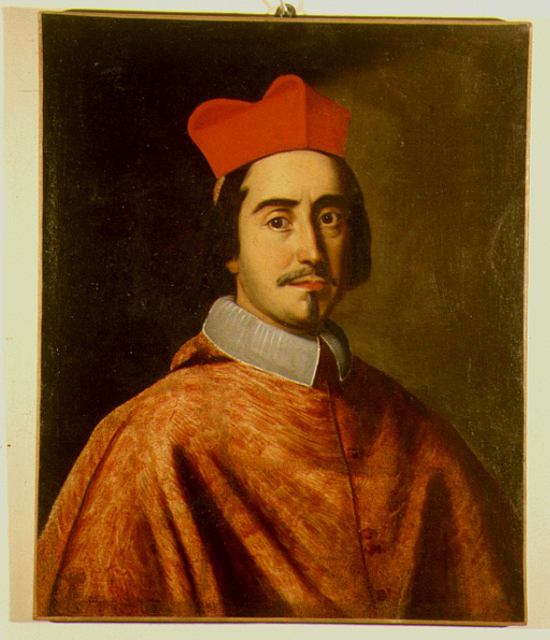
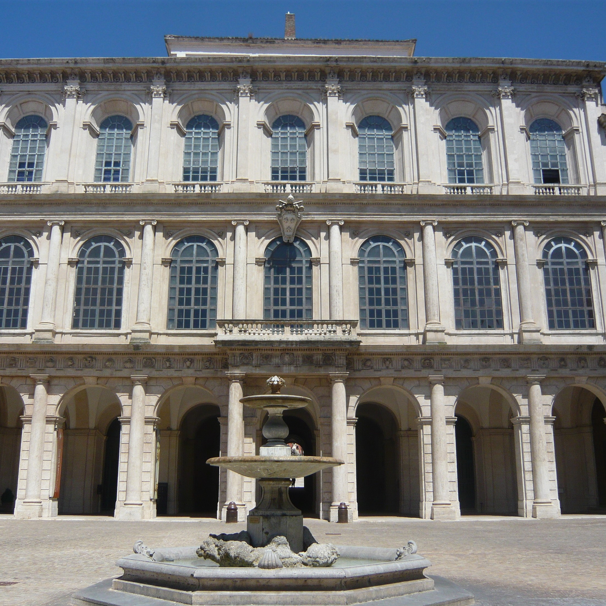

Percorsi di ricerca

Persone
Qui è possibile svolgere una ricerca per persone che aprendo le varie schede biografiche permetterà di visionare gli items del patrimonio culturali riferibili a quella persona
Vai a Famiglia
Luoghi
Qui è possibile interagire sulla mappa per scoprire i luoghi dove sono conservati i vari reperti
Vai a Luoghi

Enti
Da qui è possibile accedere ai vari oggetti, raggruppati insieme in base degli Enti che li custodiscono
Vai agli Enti